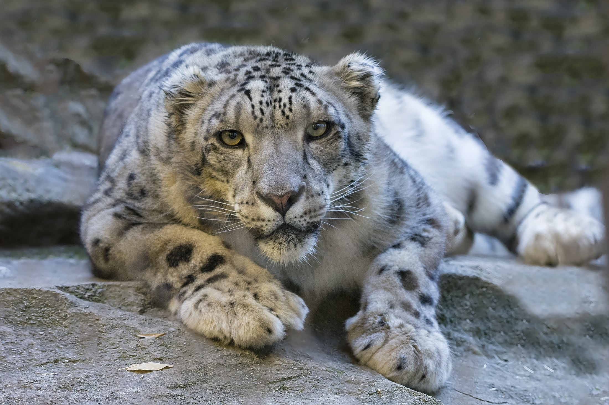

Snow Leopard
- Snow leopards inhabit the highest altitude documented of any cat at around 5.500m.
- Since air has an extremely low level of oxygen at these elevations, snow leopards evolved and developed wide nasal passages and large chest cavities that increase the volume of air breathed in.
- In addition to that, they have smaller and more numerous red blood cells than any other typical cat so as to maximize the amount of oxygen absorbed by the body.
- They can endure temperatures as low as -40°C.
- Thanks to their amazing leaping skills, they can leap farther than any other animal 15.2 meters long.
- They have huge paws used as snowshoes by snow leopards to avoid sinking into the ground.
- Their tails are specialized to help them extend balance and coordination while hunting and running at high elevations.
- It should also be noted that, snow leopards, unfortunately, are vulnerable to extinction since the climate change has a enormous impact on their habitat.